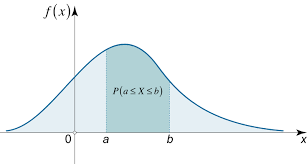
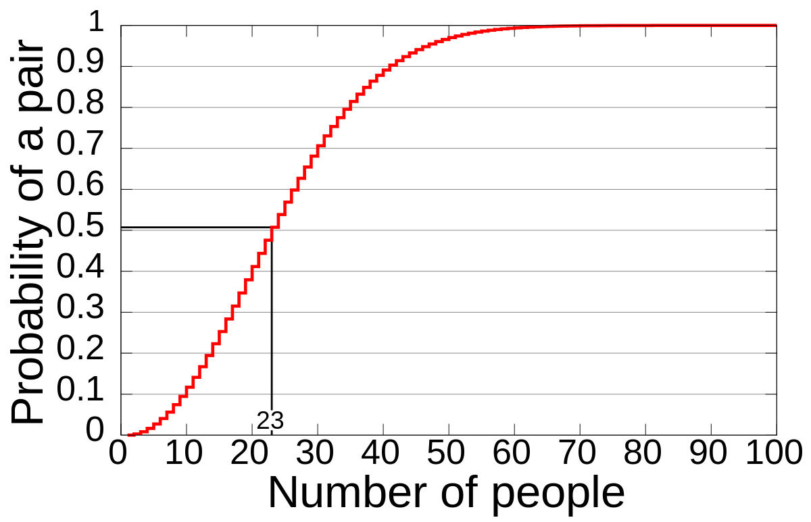
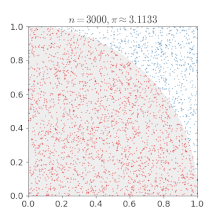
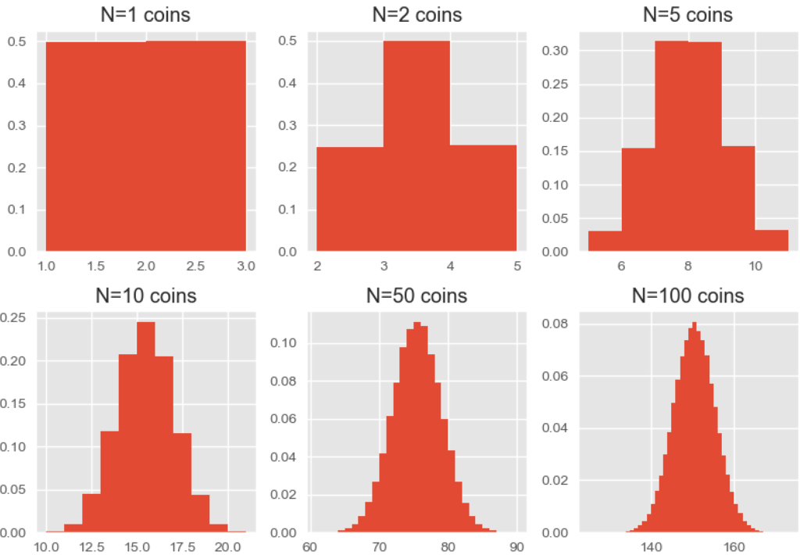

Throughout this book, we will extensively use probability theory both to design faster algorithms and assess them. This section is a brief refresher on statistics for computer science.
It is designed to take you from definitions of random variables to statistical significance and modelling, deriving the results we will use, in about 40 minutes or so.
#Basics
A random variable is a function that assigns a value to each outcome of a random experiment. Its distribution can be characterized by a set $S$ of possible values and a probability mass function $P(X=x)$. For a discrete random variable, the function satisfies:
- The domain of $P$ is $S$.
- $0 \leq P(X=x) \leq 1$ for every $x \in S$.
- $\sum_{x \in S} P(X=x) = 1$.
For example, consider a random variable $X$ with $k$ discrete states (e.g., the result of a die toss). We can place a uniform distribution on $X$ — that is, make each of its states equally likely — by setting its probability distribution to:
$$ P(X=x_i) = \frac{1}{k} $$Random variables can be used to derive other random variables. An event is a subset of possible outcomes. Its indicator is a random variable equal to $1$ when the event occurs and $0$ otherwise; the probability of the event is the total probability of the outcomes in its subset.
For example, the probability of rolling 4 or more on a 6-sided die is:
$$ P(X \geq 4) = \frac{|\{ 4, 5, 6 \}|}{|S|} = \frac{3}{6} = \frac{1}{2} $$A joint probability of two or more events is the probability of them happening at the same time. Two random variables $X$ and $Y$ are called independent if $p(X=x, Y=y) = p(X=x) p(Y=y)$ for all $x$ and $y$, and dependent otherwise. Correlation measures a particular kind of relationship between numeric variables: independent variables are uncorrelated when their variances exist, but uncorrelated variables need not be independent.
For example, the results of tossing one die and then tossing it again are considered independent, while human height and body weight are dependent. Note that correlation does not necessarily mean causation in either direction.
An observation is a value of a random variable that was observed (that actually happened). A sample is a collection of observations; many of the results below assume that they are independent and identically distributed. A statistic is any quantity computed from the sample, such as its mean or median.
The set of values of a variable does not have to be finite or even discrete, but in this case we need to adjust our definition of probability distribution. For example, when we pick a number uniformly between $0$ and $1$, each individual real-valued outcome has probability $0$. For common continuous distributions, we instead define a probability density, which can be integrated to calculate the probability of the number lying in a certain range:

The probability density function should satisfy similar requirements, but in continuous case:
$$ P(a \leq X \leq b) = \int_a^b p(x) \; dx $$We will begin with finite sets of values and introduce the continuous results we need later.
#Expectation
The expected value of a random variable is intuitively the mean of a large number of independent observations, and in the finite case it is defined as the weighted average:
$$ E[X] = \sum_{i=1}^n x_i \cdot P(X=x_i) = \mu $$For example, the expected value of a uniform $k$-sided die is $E[X] = \sum_{i=1}^k i \cdot \frac{1}{k} = \frac{k \cdot (k + 1)}{2} \frac{1}{k} = \frac{k+1}{2}$, which is $3.5$ for an ordinary six-sided die and will be close to the sample mean given enough tosses.
Expectation is linear, meaning that $E[X+Y] = E[X] + E[Y]$ and $E[aX] = a E[X]$ if $a$ is a constant. The latter property is immediate because $E[aX] = \sum a x_i p_i = a \sum x_i p_i = a E[X]$, while the former is less obvious:
$$ \begin{aligned} E[X+Y] & = \sum_{x, y} (x+y) p(x, y) \\\ & = \sum_x x \sum_y p(x, y) + \sum_y y \sum_x p(x, y) \\\ & = \sum_x x p(x) + \sum_y y p(y) \\\ & = E[X] + E[Y] \end{aligned} $$The proof does not assume that $X$ and $Y$ are independent. This is important because it allows you to calculate means of values whose full distributions would be very convoluted to derive.
#Fixed Points of a Permutation
For example, consider a random permutation of length $n$, drawn uniformly from the set of all $n!$ possible permutations. What is the expected number of fixed points of this permutation, that is, indices $i$ such that $p_i = i$?
Instead of counting the number of permutations with $0$, $1$, $2$… $n$ fixed points and computing the weighted sum, create $n$ indicators $I_k$, one for each position. Each is equal to $1$ if $p_k=k$ and $0$ otherwise. Then the expected number of fixed points is:
$$ E[X] = E[\sum_{k=1}^n I_k] = \sum_{k=1}^n E[I_k] = \sum_{k=1}^n P(p_k=k) = \sum_{k=1}^n \frac{1}{n} = \frac{n}{n} = 1 $$Even though the indicators are dependent (consider the case $n=2$, where either both indicators are $1$ or neither is), the expected value of each is easy to calculate: $E[I_k] = 1 \cdot P(p_k=k) + 0 \cdot P(p_k \neq k) = \frac{1}{n}$. We can sum them because linearity of expectation does not require independence.
#Running Time of Quicksort
Quicksort is a popular randomized algorithm for sorting a sequence of elements that works as follows:
- Select a random element $p$ from the array (called pivot).
- Remove the pivot and partition the remaining elements into those smaller and larger than $p$.
- Sort each partitioned array recursively.
- Combine the results into a single array by concatenating the sorted arrays.
For simplicity, we will assume that all elements are distinct.
The expected running time is $O(n \log n)$, but it is not immediately clear why. The “array length divides on average by two each time, so the total number of steps is $O(\log n)$” argument is not strong enough. Note that all four steps can be done in time proportional to the length of the array. Instead of analyzing the shapes of the recursive calls, we can estimate the total number of comparisons during step 2, which serves as a proxy for running time.
Number the elements by their order in the sorted array. For each pair $i<j$, introduce an indicator $I_{ij}$ equal to $1$ if the two elements are ever compared. They are compared exactly when the first pivot chosen from the rank interval $[i,j]$ is one of its endpoints. Every element in that interval is equally likely to be first, so
$$ P(I_{ij}=1) = \frac{2}{j-i+1}. $$ Now, to get the expected total number of comparisons, we sum the expectations of all indicators: $$ \begin{aligned} E\left[\sum_{i<j} I_{ij}\right] &= \sum_{i<j} \frac{2}{j-i+1} \\ &= 2\sum_{d=1}^{n-1}\frac{n-d}{d+1} \\ &= \Theta(n\log n). \end{aligned} $$The last transition is true because it is a sum of harmonic series.
#Order Statistics
There is a slight modification of quicksort called quickselect that finds the $k$-th smallest element in expected $O(n)$ time, which is useful for computing order statistics such as medians or 75th percentiles.
- Select a random element $p$ from the array.
- Partition the remaining elements into arrays $L$ and $R$ containing values smaller and larger than $p$.
- For a one-based rank $k$, recurse into $L$ if $k \leq |L|$, return $p$ if $k=|L|+1$, and otherwise recurse into $R$ for rank $k-|L|-1$.
Why does it work in linear time?
Call a pivot good when its rank lies in the middle half of the current array. A good pivot leaves at most three quarters of the elements on the side into which quickselect recurses. Because the pivot is uniform, it is good with probability at least $1/2$, so the expected number of partitioning attempts before this reduction is at most two.
Partitioning an array of size $m$ takes $O(m)$ time. Group the execution into phases ending at good pivots. The expected work is bounded by a geometric series:
$$ O(n) + O(\tfrac{3}{4}n) + O((\tfrac{3}{4})^2 n) + \ldots = O(n). $$An unfortunate sequence of pivots can still produce $O(n^2)$ work, just as it can in quicksort, but the expected running time over the random choices is linear. Practical implementations often use an in-place three-way partition so that duplicates do not create unnecessary recursion.
#Markov’s Inequality
There are a few important inequalities that give loose but useful bounds for quantities in probability theory. One of them is Markov’s inequality. It states that for a nonnegative random variable $X$ and a constant $a > 0$, the probability that $X$ is at least $a$ is at most its expectation divided by $a$:
$$ P(X \geq a) \leq \frac{E[X]}{a} $$ To prove it, consider an indicator $I_{X \geq a}$, which equals $1$ if the event $X \geq a$ occurs and $0$ if $X < a$. Then, for $a > 0$: $$ a I_{X \geq a} \leq X $$This is easy to see if we consider two possible outcomes of $X \geq a$. If it holds, then $a \cdot 1 \leq X$ which was the assumption, and otherwise $a \cdot 0 \leq X$, which is true because $X$ is nonnegative.
Since this inequality holds for all values of $X$, we can take the expectation of both sides and it will not break it:
$$ E[a I_{X \geq a}] \leq E[X] $$ The left side is the same as: $$ E[a I_{X \geq a}] = a E[I_{X \geq a}] = a P(X \geq a) $$ Thus we have: $$ a P(X \geq a) \leq E[X] \iff P(X \geq a) \leq \frac{E[X]}{a} $$Markov’s inequality provides some useful upper bounds. For $P(X < a)$ type of conditions, you can get a lower bound using the fact that $P(X < a) = 1 - P(X \geq a) \geq 1 - \frac{E[X]}{a}$.
#Birthday Problem
The pigeonhole principle states that if $n$ items are distributed into $m < n$ groups, then at least one group must contain more than one item.
The birthday problem considers the case when there are enough groups for all items ($m \geq n$), but the items are distributed randomly among the groups, and asks for the probability that some pair will be assigned to the same group.
A concrete example is the probability that in a group of $n$ randomly chosen people, some pair of them will have the same birthday. In a group of $23$ people, there is more than 50% chance that at least two of them will share a birthday, and in a group of $70$ there is at least 99.9% chance. This result seems counterintuitive given that there are only 23 individuals and 366 days to account for, but you really need to consider that the comparisons of birthdays are made between every possible pair of individuals, so there are $23 \times 22 / 2 = 253$ pairs to consider, which is more than half the number of days in a year.

More generally, let $f(n, m)$ be the probability of not having a birthday collision, that is, $f(n, m) = 1 - g(n, m)$, where $g(n, m)$ is the probability of collision we actually want. Now, consider a group of $n-1$ random people with distinct birthdays and the probability that adding the $n$-th person to the group will not cause a collision, which is the same as not picking any of the $(n-1)$ already taken birthdays:
$$ f(n, m) = f(n-1,m) \cdot (1 - \frac{n-1}{m}) $$ which can be unrolled as follows (for $n \leq m$): $$ \begin{aligned} f(n, m) &= 1 \times (1-\frac{1}{m}) \times (1-\frac{2}{m}) \times ... \times (1-\frac{n-1}{m}) \\\ &= \frac{m \times (m-1) \times (m-2) \times \ldots \times (m-n+1)}{m^n} \\\ &= \frac{m!}{m^n (m-n)!} \end{aligned} $$This product shrinks pretty quickly with $n$, but it is not clear what value of $m$ is needed to be “safe.” It turns out that the threshold is $n=\Theta(\sqrt m)$: if $n=o(\sqrt m)$, the collision probability tends to zero, while if $n=\omega(\sqrt m)$, it tends to one.
Let’s go back to the idea of counting pairs of birthdays and introduce $\frac{n \cdot (n-1)}{2}$ indicators $I_{ij}$ — one for each pair $(i, j)$ of persons — each being equal to $1$ if the birthdays match. The probability and expectation of each indicator is $\frac{1}{m}$.
Now consider a random variable $X$ equal to the number of pairs of shared birthdays. It is the sum of these indicators, so its expected value is:
$$ E[X] = E[\sum_{i < j} I_{ij}] = \sum_{i < j} E[I_{ij}] = \sum_{i < j} \frac{1}{m} = \frac{n \cdot (n-1)}{2} \cdot \frac{1}{m} = \Theta(\frac{n^2}{m}) $$ The expected number of colliding pairs changes scale around $m = \Theta(n^2)$. Expectation alone does not prove that a collision is likely: in principle, a random variable could be zero almost always and enormous on rare occasions. It does, however, settle one direction. By Markov’s inequality: $$ g(n, m) = P(X \geq 1) \leq E[X] = \frac{n(n-1)}{2m}. $$ If $m \gg n^2$, this upper bound tends to zero. For the other direction, return to the exact probability of no collision and use $1-x \leq e^{-x}$: $$ \begin{aligned} P(X=0) &= \prod_{i=0}^{n-1}\left(1-\frac{i}{m}\right) \\ &\leq \exp\left(-\sum_{i=0}^{n-1}\frac{i}{m}\right) \\ &= \exp\left(-\frac{n(n-1)}{2m}\right), \end{aligned} $$ and therefore $$ g(n,m) = P(X \geq 1) \geq 1 - \exp\left(-\frac{n(n-1)}{2m}\right). $$Combined, the bounds show that $g(n, m) \to 1$ if $m \ll n^2$ and $g(n, m) \to 0$ if $m \gg n^2$. When $m$ is proportional to $n^2$, the collision probability approaches a nontrivial constant.
#Variance
Dispersion is the extent of how “noisy” the distribution is. There are multiple ways to measure it, the most popular being the variance, which is the expectation of squared deviation of a random variable:
$$ Var[X] = E[(X - E[X])^2] = \sigma^2 $$Standard deviation, denoted as $\sigma$ and equal to the square root of variance, is more frequently used as a practical statistic — because at least it has the same units of measurement — while the variance has some useful mathematical properties.
With a bit of algebra, we can derive a slightly more computable formula for variance:
$$ \begin{aligned} Var(X) &= E[ (X - E[ X ])^2 ] \\\ &= E[ X^2 - 2X E[ X ] + E[ X ]^2 ] \\\ &= E[ X^2 ] - 2 E[ X ] E[ X ] + E[ X ]^2 \\\ &= E[ X^2 ] - E[ X ]^2 \end{aligned} $$Means and variances obey simple algebraic rules, which makes useful properties of derived random variables easy to obtain.
In particular, if $Var(X) = \sigma^2$, then multiplying $X$ by a constant $a$ gives:
$$ Var(aX) = E[(aX - E[ aX ])^2] = a^2 E[ (X - E[ X ])^2] = a^2 Var(X) $$ If we add two independent random variables $X$ and $Y$: $$ \begin{aligned} Var(X + Y) &= E[ (X+Y)^2 ] - E[X+Y]^2 \\\ &= E[ X^2 + 2XY + Y^2] - (E[X] + E[Y])^2 \\\ &= E[X^2] + 2 E[XY] + E[Y^2] - (E[X]^2 + 2 E[X] E[Y] + E[Y]^2) \\\ &= E[X^2] - E[X]^2 + E[Y^2] - E[Y]^2 \\\ &= Var(X) + Var(Y) \end{aligned} $$Here, we used the fact that $E[XY] = E[X] E[Y]$ for independent $X$ and $Y$, so that $2 E[XY]$ and $2 E[X] E[Y]$ cancel each other out. In general, this is not true: for example, if $Y=-X$, every deviation of $X$ from the mean is cancelled by $Y$, making the variance of $X+Y$ zero.
For arbitrary variables, the variance of their sum is:
$$ Var(X + Y) = Var(X) + Var(Y) + 2 \cdot cov(X, Y) $$ where $cov(X, Y)$ is the covariance: $$ \begin{aligned} cov(X, Y) &= E[(X-E[X])(Y-E[Y])] \\\ &= E[XY] - E[X] E[Y] - E[Y] E[X] + E[X] E[Y] \\\ &= E[XY] - E[X]E[Y] \end{aligned} $$ If we calculate the average of $n$ independent and identically distributed random variables with variance $\sigma^2$, what will its variance be? First add the $n$ variables; the variance of the sum is: $$ Var(\sum_{i=1}^n X_i) = \sum_{i=1}^n Var(X_i) = n \sigma^2 $$ Then divide by $n$ to get the mean: $$ Var(\frac{1}{n} \sum_{i=1}^n X_i) = \frac{1}{n^2} Var(\sum_{i=1}^n X_i) = \frac{n\sigma^2}{n^2} = \frac{\sigma^2}{n} $$ Chebyshev’s inequality turns this calculation into one form of the law of large numbers: for every fixed $\epsilon>0$, $$ P\left(\left|\frac{1}{n}\sum_{i=1}^n X_i - \mu\right| \geq \epsilon\right) \leq \frac{\sigma^2}{n\epsilon^2} \to 0. $$In other words, the sample mean converges in probability to the expected value as the number of trials grows. Independence matters here; repeated measurements that share the same source of noise do not provide $n$ independent pieces of evidence.
#Chebyshev’s Inequality
Let $X$ be a random variable with expected value $\mu$ and variance $\sigma^2 > 0$. Then for any $k > 0$:
$$ P(|X-\mu| \geq k \sigma) \leq \frac{1}{k^2} $$This is called Chebyshev’s inequality, and it gives an upper bound on the probability that a random variable deviates from the mean by at least $k$ standard deviations. Only the case $k > 1$ gives a nontrivial bound. For example, regardless of the distribution, it guarantees that at least:
- 50% of results will be within $\sqrt 2 \cdot \sigma$ of the mean,
- 75% of results will be within $2 \cdot \sigma$,
- 99% of results will be within $10 \cdot \sigma$, and so on.
It follows directly from Markov’s inequality when applied to random variable $(X-\mu)^2$ and $a=(k\sigma)^2$:
$$ P(|X-\mu| \geq k \sigma) = P((X-\mu)^2 \geq (k\sigma)^2) \leq \frac{E((X-\mu)^2)}{(k \sigma)^2} = \frac{\sigma^2}{k^2\sigma^2} = \frac{1}{k^2} $$The bound is rather loose: it is often the case that the results are much more likely to be distributed close to the mean, but it is still very useful for proofs.
#Monte Carlo Methods
Consider the following problem. You are given a map of a city (for simplicity, assume it is just a unit square) and a list of coordinates of cell towers and their ranges. You need to calculate their coverage, that is, the share of points of the city that have at least one tower within its range.
We can rephrase the problem more concisely this way: calculate the area of intersection of a unit square and a union of circles. This problem has an exact, but very difficult solution that involves calculating all “points of interest” where any two shapes intersect and sweeping over the map from left to right and doing some complicated integration on each intersection-free segment. This solution is as precise as floating-point arithmetic can be, but slow and very painful to implement unless you are an expert in computational geometry.
What we can do instead is to pick a few points of the square at random and check each one of them if it is covered by any circle with a simple $(x-x_i)^2 + (y-y_i)^2 \leq r_i^2$ predicate. Then the ratio of covered points will be our estimate of the real answer, and the result should be pretty close given enough points.

But if we have a formal requirement on the precision of our answer — say, if we want an absolute error below $10^{-3}$ at least 99% of the time — how many points do we need? We can estimate the variance of our approximation and then plug it in Chebyshev’s inequality.
Our estimate $X$ is the average of $n$ indicators $I_k$, each equal to $1$ if the sampled point is covered by a circle. If the covered area is $p$, then $E[I_k]=p$ and
$$ Var(I_k) = E[I_k^2] - E[I_k]^2 = p-p^2 = p(1-p), $$which is at most $\frac{1}{4}$ and reaches it when $p = \frac{1}{2}$.
Since the trials are independent, the variance of the estimate is at most:
$$ Var(X) = Var(\frac{1}{n} \sum_{k=1}^n I_k) = \frac{1}{n^2} \sum_{k=1}^n Var(I_k) \leq \frac{1}{n^2} \frac{n}{4} = \frac{1}{4n} $$ Now, Chebyshev’s inequality tells us that: $$ P(|X-\mu| \geq k \sigma) \leq \frac{1}{k^2} $$ which means that for a fixed acceptable error rate $\frac{1}{k^2}$ and desired bound on deviation $d = k \sigma$, the standard deviation of $X$ needs to be at most $\frac{d}{k}$. On the other hand, since $Var(X) = \sigma^2 \leq \frac{1}{4n}$, the standard deviation is bounded by $\sigma \leq \frac{1}{2\sqrt n}$. Thus, we achieve the required precision if $$ \sigma \leq \frac{1}{2\sqrt n} \leq \frac{d}{k} $$ and solving for $n$: $$ n \geq \frac{k^2}{4d^2} $$which importantly implies that $n = \Theta(d^{-2})$. For the requirement above, $k=10$ and $d=10^{-3}$, so Chebyshev’s inequality gives the sufficient bound $n \geq 25{,}000{,}000$. More generally, to get $r$ decimal digits of precision ($d = 10^{-r}$) at a fixed confidence level, we need $n = \Theta(10^{2r})$ trials.
These types of algorithms are called Monte Carlo methods: they have a deterministic time budget but a probabilistic error. Las Vegas algorithms always produce the correct result but take a random amount of time. Randomized quicksort is an example.
#Bayes’ Rule
The conditional probability $P(A \mid B)$ is the probability of event $A$ given that $B$ has occurred. From the definition
$$ P(A \mid B) = \frac{P(A \cap B)}{P(B)}, $$ we can express the same joint probability in two ways: $$ P(A \cap B) = P(A \mid B)P(B) = P(B \mid A)P(A). $$ Rearranging gives Bayes’ rule: $$ P(A \mid B) = \frac{P(B \mid A)P(A)}{P(B)}. $$It is useful because $P(B \mid A)$ is often easier to model than $P(A \mid B)$. In the usual terminology, $P(A)$ is the prior, $P(B \mid A)$ is the likelihood, and $P(A \mid B)$ is the posterior after observing $B$.
Suppose 1% of commits introduce a performance regression. A noisy benchmark detects 90% of real regressions but also reports a regression for 5% of good commits. If the benchmark raises an alarm, the probability that the commit is actually bad is
$$ \begin{aligned} P(\text{bad} \mid \text{alarm}) &= \frac{P(\text{alarm} \mid \text{bad})P(\text{bad})}{P(\text{alarm})} \\ &= \frac{0.9 \cdot 0.01}{0.9 \cdot 0.01 + 0.05 \cdot 0.99} \\ &\approx 0.154. \end{aligned} $$Despite the apparently accurate test, most alarms are false because regressions are rare. Ignoring this base rate is a common statistical error.
For a partition of mutually exclusive hypotheses $H_1,\ldots,H_k$, the denominator can be expanded using the law of total probability:
$$ P(B) = \sum_{i=1}^k P(B \mid H_i)P(H_i). $$Bayesian inference applies this update repeatedly, treating the posterior after one observation as the prior before the next. The arithmetic is simple; choosing honest priors and likelihoods is the difficult part.
#Confidence Intervals
There is a theorem slightly beyond the scope of this tutorial called the central limit theorem. Under broad conditions, the properly normalized sum of many independent random variables converges in distribution to the normal distribution:

The normal distribution with mean $\mu$ and standard deviation $\sigma$ has density
$$ f(x) = \frac{1}{\sigma \sqrt{2\pi} } e^{-\frac{1}{2}\left(\frac{x-\mu}{\sigma}\right)^2}. $$About 68% of its probability lies within one standard deviation of the mean, about 95% within two, and about 99.7% within three. More precisely, if $Z$ is a standard normal variable, then $P(|Z| \leq 1.96) \approx 0.95$.
If $X_1,\ldots,X_n$ are independent and identically distributed observations with mean $\mu$ and finite variance $\sigma^2$, the central limit theorem says that for large $n$ the sample mean is approximately normal:
$$ \bar X = \frac{1}{n}\sum_{i=1}^n X_i \approx \mathcal N\left(\mu, \frac{\sigma^2}{n}\right). $$ The standard deviation of the sampling distribution, $\sigma / \sqrt n$, is called the standard error. When $\sigma$ is unknown, we estimate it with the sample standard deviation $$ s = \sqrt{\frac{1}{n-1}\sum_{i=1}^n (X_i-\bar X)^2}. $$ For a sufficiently large independent sample, an approximate 95% confidence interval for the true mean is $$ \bar X \pm 1.96 \frac{s}{\sqrt n}. $$For small samples drawn from an approximately normal population, replace $1.96$ with the corresponding quantile of Student’s $t$ distribution with $n-1$ degrees of freedom. Its heavier tails account for the uncertainty in estimating $\sigma$; it approaches the normal distribution as $n$ grows.
A 95% confidence interval does not mean that, after seeing the data, there is a 95% probability that the fixed parameter $\mu$ lies in this particular interval. It means that if we repeated the sampling procedure, 95% of the intervals it constructs would contain $\mu$. A Bayesian credible interval has the former interpretation, but only relative to an explicit prior and likelihood.
The $1/\sqrt n$ standard error is an important practical limitation. Reducing uncertainty by a factor of two requires four times as many independent observations. Taking measurements more rapidly does not help if they share drift, thermal throttling, or other correlated noise.
Normal intervals are not universally appropriate. Latencies can be skewed or heavy-tailed, medians and percentiles have different sampling distributions, and a few outliers can dominate the mean. A bootstrap is often a useful alternative: repeatedly resample $n$ observations with replacement, compute the statistic for each resample, and use quantiles of those values to estimate its uncertainty. It still assumes that the original observations represent independent draws from the population of interest.
#Hypothesis Tests
A hypothesis test begins with a null hypothesis $H_0$, such as “the optimization has no effect.” It chooses a statistic whose distribution under $H_0$ is known or approximated, and asks how unusual the observed value would be if $H_0$ were true.
The p-value is the probability, under $H_0$, of obtaining a result at least as extreme as the observed one. It is not the probability that $H_0$ is true, nor the probability that the result happened “by chance.” Declaring significance at level $\alpha=0.05$ means accepting up to a 5% probability of rejecting a true null hypothesis under the assumptions of the test.
There are two basic ways to be wrong:
- A type I error rejects a true null hypothesis; its probability is controlled by $\alpha$.
- A type II error fails to detect a real effect. One minus this probability is the power of the test.
With enough observations, an irrelevant effect can be statistically significant. With too few, an important effect can remain undetected. Always report the estimated effect and its confidence interval, not just whether a threshold was crossed.
#A/B Testing
An A/B test estimates a causal effect by randomly assigning experimental units to two variants. Randomization makes the groups comparable in expectation: differences in the outcome can then be attributed to the treatment rather than to which users, requests, or machines happened to receive it.
Let group A have $n_A$ observations with mean $\bar X_A$ and sample variance $s_A^2$, and group B have the corresponding quantities $n_B$, $\bar X_B$, and $s_B^2$. The estimated effect is
$$ \hat\Delta = \bar X_B - \bar X_A, $$ with estimated standard error $$ SE(\hat\Delta) = \sqrt{\frac{s_A^2}{n_A} + \frac{s_B^2}{n_B}}. $$ For large independent samples, an approximate 95% confidence interval is $$ \hat\Delta \pm 1.96\,SE(\hat\Delta). $$If the interval excludes zero, the corresponding two-sided large-sample test rejects the no-effect hypothesis at the 5% level. For small normal samples, Welch’s $t$ test uses the same standard error with an adjusted number of degrees of freedom.
The formulas are the easy part. Most invalid experiments fail in their design:
- Wrong unit of randomization. Assigning requests independently when the treatment changes per-user state violates independence. Randomize users and analyze users.
- Selection bias. Exit polls, voluntary surveys, and benchmark results from one unusually quiet machine may not represent the target population. More samples do not repair a biased sampling process.
- Peeking. Repeating an ordinary test after every new observation and stopping when $p<0.05$ increases the false-positive rate. Fix the duration or use a sequential test designed for repeated looks.
- Multiple comparisons. If all null hypotheses are true, testing 20 independent metrics at the 5% level produces at least one false alarm with probability about $1-0.95^{20}\approx0.64$, or 64%. Choose a primary metric or adjust for multiple testing.
- Changing the experiment. Excluding an inconvenient segment or redefining the metric after seeing the result invalidates the original significance calculation.
- Underpowered tests. Decide the smallest effect worth detecting, estimate the noise, and choose the sample size before starting. “Not significant” does not imply “no effect.”
Performance experiments often benefit from a paired design. Run A and B under closely matched conditions—alternating their order or measuring both on the same randomized input—and analyze the per-pair differences. Shared machine noise then cancels instead of inflating the variance. The pairing must be reflected in the analysis; treating paired observations as two unrelated samples throws away that advantage.
Statistical machinery cannot rescue an unrepresentative benchmark or an incorrect program. It quantifies uncertainty under the assumptions you give it. The practical discipline is to state those assumptions, randomize what can be randomized, preserve all observations, and make the effect size—not the p-value—the result you care about.